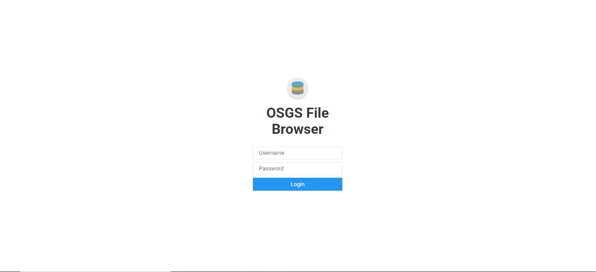
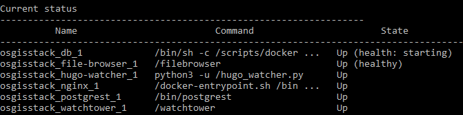
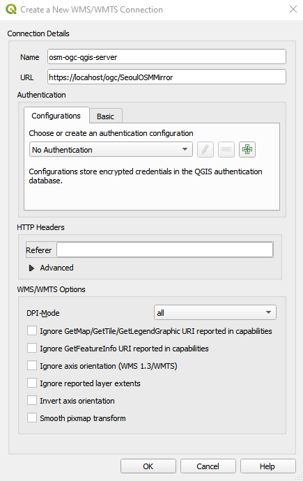
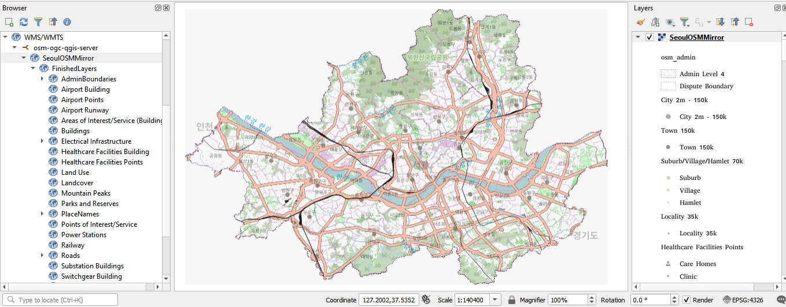
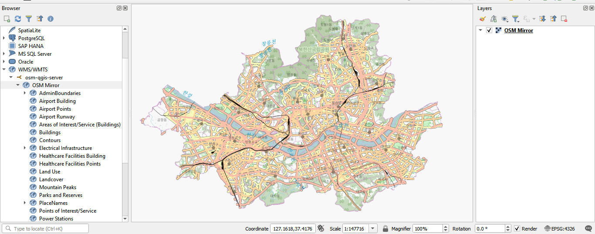

QGIS Desktop as a Web Services Client¶
This workflow will cover how to use QGIS Desktop as a web service client for both the QGIS Server and GeoServer published layers.
Deploying the initial stack¶
In your server terminal, deploy the initial stack by running either make configure-ssl-self-signed or make configure-letsencrypt-ssl. The initial stack consists of the Nginx, Hugo Watcher and Watchtower services.
Use make configure-ssl-self-signed if you are going to use a self-signed certificate on a localhost for testing. Use make configure-letsencrypt-ssl if you are going to use a Let’s Encrypt signed certificate on a name host for production. The make configure-ssl-self-signed will deploy the Nginx, Hugo Watcher and Watchtower services, but after running make configure-letsencrypt-ssl you will need to run make deploy-hugo to deploy the Nginx, Hugo Watcher and Watchtower services.
Use make ps to view the services running. The following services should be up:

Deploying the File Browser service¶
To deploy the File Browser service run make deploy-file-browser.
Use make ps to view the services running. The following services should be up:

The file browser service can now be accessed on /files/ e.g. https://localhost/files. The url will direct you to the Login page. Sign in to the service using the File Browser username admin and password <FILEBROWSER_PASSWORD> specified in the .env file.

Deploying the PostgreSQL and PostGIS service¶
Deploy the PostgreSQL and PostGIS service using make deploy-postgres. If you already have PostgreSQL installed on your local machine, ensure that you specify a different port number for the Postgis Public Port other than port 5432, the default port for PostgreSQL. For example, you can use the port number 5434.

Use make ps to view the services running. The following services should be up:

Creating the server-side connection service file¶
To create the server-side connection service file, run the command cp conf/pg_conf/pg_service.conf.example conf/pg_conf/pg_service.conf in the terminal. In the conf/pg_conf/pg_service.conf file, add a service with the following service name and connection parameters.
[osgs]
dbname=gis
user=docker
port=<POSTGRES_PRIVATE_PORT>
password=<POSTGRES_PASSWORD>
host=db
sslmode=require
For the port and password connection parameters, use the POSTGRES_PRIVATE_PORT and POSTGRES_PASSWORD specified in the .env file. For the host connection parameter specify the hostname as db.
Deploying the GeoServer service¶
Deploy the GeoServer service using make deploy-geoserver. Use make ps to view the services running. The following services should be up:

The service is now accessible on /geoserver/ e.g. https://localhost/geoserver/. Use the <GEOSERVER_ADMIN_USER> and <GEOSERVER_ADMIN_PASSWORD> specified in the .env file to sign into GeoServer.
Deploying QGIS Server¶
To deploy the QGIS Server service, run make deploy-qgis-server. Use make ps to view the services running. The following services should be up:

Publishing layers using QGIS Server¶
For instructions on how to publish QGIS projects by uploading the QGIS project using the File Browser service, see the Uploading a QGIS project workflow.
For instructions on how to publish QGIS projects through the connection service file, see the Publishing a QGIS project using a connection service file workflow.
Publishing layers using GeoServer¶
For instructions on how to publish layers using GeoServer, see the Publishing layers using GeoServer workflow.
Using QGIS Desktop as a web service client for QGIS Server published layers¶
Accessing a published QGIS project on the OGC link¶
In your QGIS Desktop Browser panel, right click on the WMS/WMTS option and create a new connection.

Give the new connection an appropriate name. For the URL parameter, access the published QGIS project via https://<server name>/ogc/<QGIS project name>. For example https://localhost/ogc/SeoulOSMMirror. The <server name> parameter is the hostname of the server where you set up OSGS. Click “Ok”.

Once the connection is successful, you can now load into QGIS the entire published QGIS project or individual layers as WMS layers.

Accessing a published QGIS project via the map link¶
In your QGIS Desktop Browser panel, right click on the WMS/WMTS option and create a new connection.
Give the new connection an appropriate name. For the URL parameter, access the published QGIS project via /map/ i.e. https://<server name>/map/. The <server name> parameter is the hostname of the server where you set up OSGS. Click “OK”.

Once the connection is successful, you can now load into QGIS the entire published QGIS project or individual layers as WMS layers.

Using QGIS Desktop as a web service client for GeoServer published layers¶
You can access layers published using the GeoServer service using WFS or WMS using the scheme: https://<server>/geoserver/<workspace>/wfs or https://<server>/geoserver/<workspace>/wms where <server> is the hostname of the server where you set up OSGS and <workspace> is the name of the workspace where your layers are stored.
In your QGIS Desktop Browser Panel, right click on the WMS/WMTS option and click on New Connection.

Give the connection an appropriate name and set the URL using the WMS schema as shown below. Click on “OK”.

Once the connection is successful, you can now load into QGIS the published layer as a WMS layer.